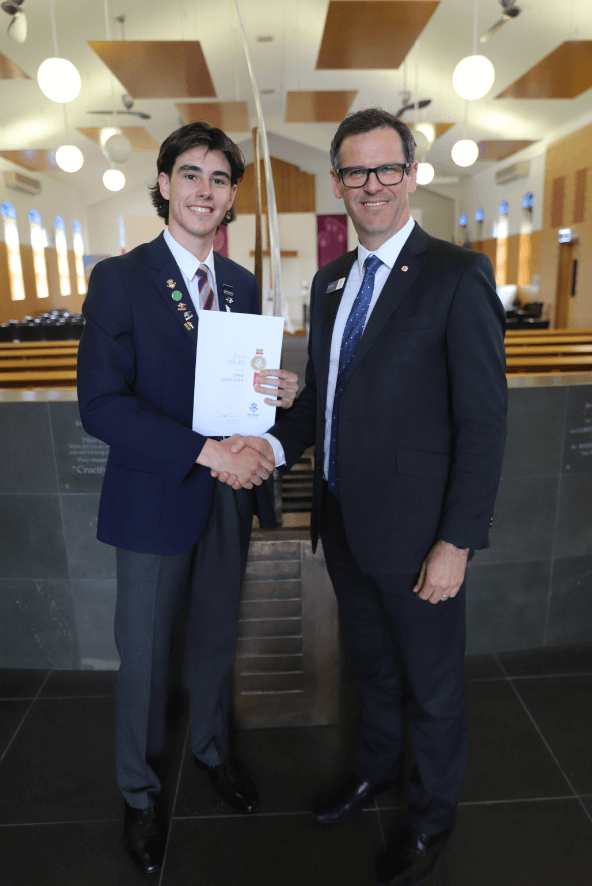

Pictured: 2022 Dux Jake Johnston and Principal Mark Ashmore
On behalf of the Salesian College Chadstone community, I congratulate our 2022 Dux, Jake Johnston, who achieved an ATAR of 99.45, putting him in the top 0.55% of all Year 12 students in Australia. Achieving a study score of 47 in English and Further Mathematics, 46 in Mathematics Methods, 40 in Physics, 38 in Specialist Mathematics and a 44 in Business Management in Year 11, Jake is set to study Engineering and Commerce at Monash University.
I spoke to Jake about how he remained focused and committed to his learning and leadership responsibilities following the COVID-19 experience, and the key people in his life who provided him with support and guidance. I also had the opportunity to hear Jake share his plans for the future.
Mark Ashmore
Principal
Jake, your resilience and commitment to learning and leadership has been outstanding as we have returned to face-to-face uninterrupted learning this year. Explain how you managed this readjustment during what has been a very challenging last few years.
It was a profound change moving from my desk at home for two years straight, back to the school desks in the Salesian classrooms. I think what allowed me to adapt so readily was the sheer enjoyment of being back on campus with all of my mates after missing their company over the Microsoft Teams calls. Just the opportunity to enjoy school as it should be, social and interactive, enabled me to draw the best out of my academic ability and my final year at school.
What modern learning strategies have proved to be the most useful across your secondary schooling?
Throughout all of my studies, I have found myself working together and collaborating with my mates. We supported and taught each other, but also motivated each other through friendly competition. I found myself, especially in Year 12, to be driven by those around me who were also striving to be the best they could be. This method of studying not only pushed me to my limits but also strengthened the comradery with the boys around me.\
Now that the results are out, what are your plans?
Firstly, I’m going to enjoy the summer as much as I can, spending time with my friends and family and trying to get away as much as possible, making up for two years of COVID and a very tough Year 12. After the summer is over, I’ll begin my studies at University and continue my pathway of academics at Monash University
With exceptional results come a broad range of options. How will these options help you arrive at your overall future goal?
Of course my result has allowed me a wide range of options at University, however I have been set on an engineering pathway for a while now, and combined with commerce I hope to set myself up well for the future. I believe that merely having the option to do a course because of your result, does not bind you to studying a degree which requires the highest ATAR. Rather, I think taking on a course which you are passionate about or which aligns with your preferred subjects will set you up best for the future and ensure you are studying something you will enjoy.
What have these last two years of extraordinary adaptability prepared you for?
Over the last couple years I learnt the skill of self-driven learning, taking it upon myself to learn content and study effectively. Whilst the Salesian staff were exceptional in their efforts to support us over Microsoft Teams, there was of course, a different level of guidance since we were not face-to-face. Rather than being disheartened, I gained the ability to study by myself, which in turn, helped me tremendously in Year 12 as the amount of study hours ramped up.
How have you achieved balance this year?
My final year of school wasn’t solely focussed on my academics, I also took pride and enjoyment in my extracurricular activities. In my role as one of the College Vice-Captains I had an amazing opportunity to lead and represent my school as well as collaborate with other Colleges around us. I also took pride in representing my school in a range of Associated Catholic Colleges (ACC) sports. From playing volleyball, footy and basketball as well as competing in ACC athletics and cross country, my schooling experience was diversified and made more fulfilling. I loved being able to compete in all these sports alongside my mates and represent the Salesian badge with pride.
How have your teachers helped guide you and keep you focused during Year 12?
Throughout Year 12, I found all of the teachers around us boys to be entirely committed to us and enable us to perform to our highest capabilities. They were always there for extra feedback, and working hard to ensure no stone was unturned when it came to our studies. I would like to show genuine gratitude toward my Year 12 teachers, Mr McDonald, Mr Khambete, Mrs Poulose and Dr Barclay, as well as my Oratory teacher Mr Augustus for being a guiding light this year.
What role has courage and belief in yourself played in helping you to achieve your goals?
I believe self-confidence is key in any facet of life in which you are trying to excel. Whether it be sport or studies, having the belief that I can achieve my aspirations motivates and drives me toward achieving those aspirations.
What have your Salesian relationships taught you?
At Salesian, I have been a part of a brotherhood, sharing in great relationships with the boys around me as we became young men. These strong relationships I have built are something that I will treasure long into the future, even as we all traverse down our own paths. My Salesian relationships have taught me to be appreciative of the kind support which friends provide, and to cherish the vital role they play in my life.
What three points of advice for students do you have to share?
First, enjoy secondary school for what it is, a place to be with your mates and enjoy your time together. If you are able to make the most out of your social life at Salesian, then your last year of school is bound to be that much more enjoyable, and you will find yourself more motivated to achieve your goals.
Second, stay resilient. Year 12 is a long and gruelling year and we often found ourselves at low points on the verge of giving up and losing all motivation to study. Yet, it is only one year of our lives, and finding the strength to push through the challenges we face throughout the year, proved to be a great reward once all the work is over.
Lastly, make the most out of the teaching staff at Salesian College. The teachers at Salesian were truly invested in my studies and were entirely committed to ensuring I could succeed. If you are looking to make the most out of your final year at school, make sure you utilise the well-intentioned, well-equipped staff who are on your side.
On behalf of Salesian College Chadstone, I congratulate Jake on the commitment and perseverance he has demonstrated over the course of his time at Salesian College Chadstone and during 2022. We look forward to hearing about all of his future accomplishments.